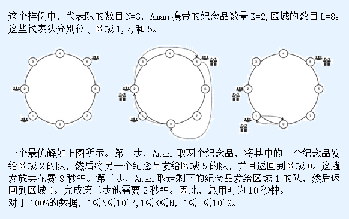

第一行: N K L
第二行: positions[0] … positions[N-1]
N: 代表队的数目。
K: Aman在同一时间能够携带纪念品的最大数目。
L: 开幕式场地上的区域数目。
positions: 一个长度为N的数组，positions[0],...,positions[N-1]给出了所有代表队所在区域的编号。positions 的元素按非递减排序。
IOI2015开幕式正在进行最后一个环节。按计划在开幕式期间，每个代表队都将收到由主办方发放的一个装有纪念品的盒子。然而所有志愿者都被精彩的开幕式所吸引，除Aman外其他人完全忘记了发放纪念品这件事。Aman是一位热情的志愿者，为使得IOI尽量圆满，他要用最短的时间将所有纪念品发放出去。
开幕式的场地是一个圆环，被分为 个完全相等的区域，这些区域的编号依次为 到，也就是说，对于0≤i≤L-2,区域i与区域i+1相邻，且区域L-1与区域0相邻。场地上共有N个代表队，每队坐在上面的一个区域上，每个区域可以包含任意多个代表队，也可以为空。
共有N个相同的纪念品。开始，Aman和所有纪念品都在区域0。Aman应该给每队一个纪念品，并且在发放完最后一个纪念品后他必须回到区域0。注意，有些队可能坐在区域0。
在任意时刻，Aman只能够携带至多K个纪念品。Aman必须从区域0取走这些纪念品，且取纪念品不需要时间。纪念品一旦从区域0被取走后，Aman只能将其发放给某个代表队或者随身携带。无论何时，Aman携带一个或更多的纪念品到达一个这样的区域，该区域有一个代表队尚未收到纪念品，Aman便可将他携带的一个纪念品发给这个代表队。这种发放也在瞬间完成。他所花的时间都消耗在区域之间的移动上。无论携带多少纪念品，Aman都需要1秒钟从一个区域移动到其相邻的区域（可以顺时针移动也可以逆时针移动）。
你的任务是计算出Aman发放完所有纪念品并返回到他的最初区域所需要的最短时间（秒数）。
第一行: N K L
第二行: positions[0] … positions[N-1]
N: 代表队的数目。
K: Aman在同一时间能够携带纪念品的最大数目。
L: 开幕式场地上的区域数目。
positions: 一个长度为N的数组，positions[0],...,positions[N-1]给出了所有代表队所在区域的编号。positions 的元素按非递减排序。
一个整数，表示Aman 能够完成这一任务所需的最短时间（秒数）。
3 2 8
1 2 5
10